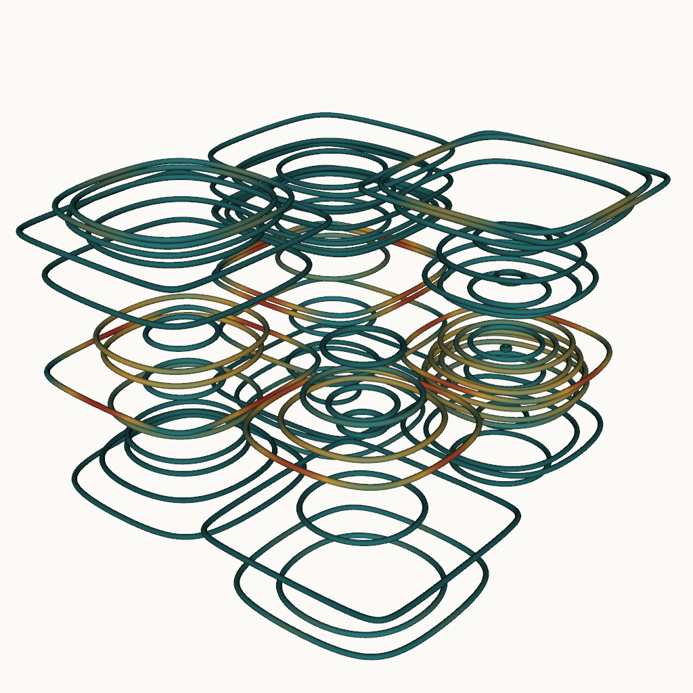

CFD post · vortex identification · VTK
Turbulent flow visualization (Taylor-Green vortex)
The reference workload for any CFD post-processing pipeline. A 64³ analytic vortex field, a Q-criterion derived from velocity gradients, an isosurface for vortex cores, and RK4-integrated streamlines tubed and colored by speed. Every step is scripted — .vti output drops straight into ParaView.